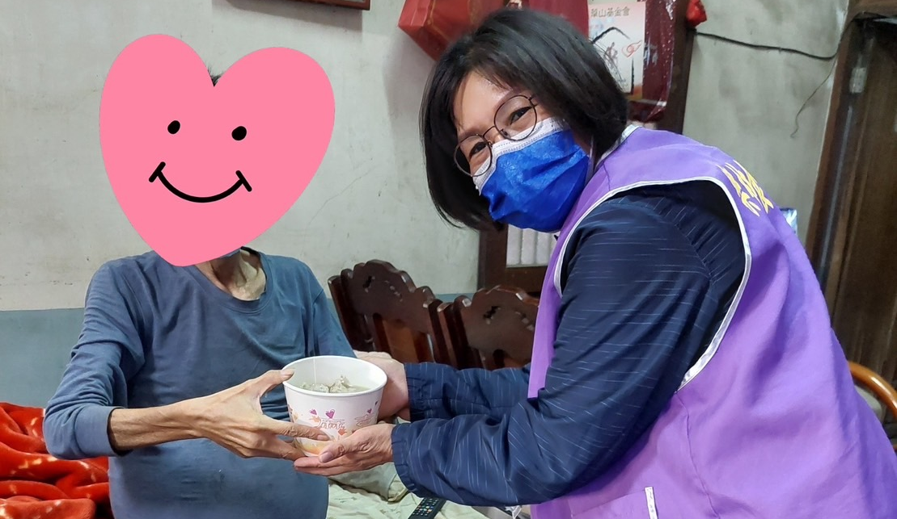
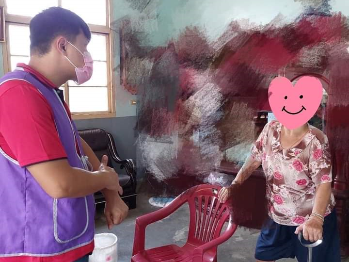

樂林
食物銀行
樂林
食物銀行
首頁
傳愛小舖
惜福戶故事
關於我們

故事一
有一位生病的老伯伯最近都沒有來領取物資，樂林的夥伴不放心他，所以下午到他家裡看他，之後向理事長報告老伯伯目前的狀態，夥伴一見到老伯伯的情況馬上自掏腰包買碗粥給老伯伯吃，且立即通報！老伯伯因身體因素兩腿水腫，導致行動不便，也沒有四角架能輔助，無法烹煮，到目前為止已經吃了一個月的泡麵。也因為無發烹飪的原因，老伯伯自己將鄰居給他的魚捐給樂林，我們的夥伴欣然接下，回到樂林後，煮了一碗魚湯再送給老伯伯。

故事二
生活總是浮浮沉沉的，誰也不願意當那位手心朝上的人，因時間的流逝，加上生活的困苦，導致弱勢家庭努力生存的動力，就像是壓垮最後一根稻草似地漸漸被消耗掉，近期以來，有許多善心人士向樂林通報個案，希望樂林能過去訪視，並與他們說：你們去看看啦！看能不能給他們有些資源。而樂林的訪視組盡速的前往訪視，經過一番的細心聆聽個案的家境狀況，如同老朋友般，陪伴著他們訴說家中到目前為止的點點滴滴，查看了周遭的環境、了解家庭背景，也有到廚房檢查飲食習慣或是物資是否充足，有時看到冰箱內僅剩不多的罐頭，廚房的簡陋設備、內心感到十分的不捨！總會跟個案說「有需要食物，樂林可以幫助你」，有時也有住著不錯的房子的長輩，他們勤儉持家，總想為孩子省點錢來爭取物資！我們總要機會教育，告訴長輩施與受的差別，把機會給真正需要的人！
地址：彰化縣二林鎮建興街40號 信箱：burires@contact.com 電話：(04)8952-060